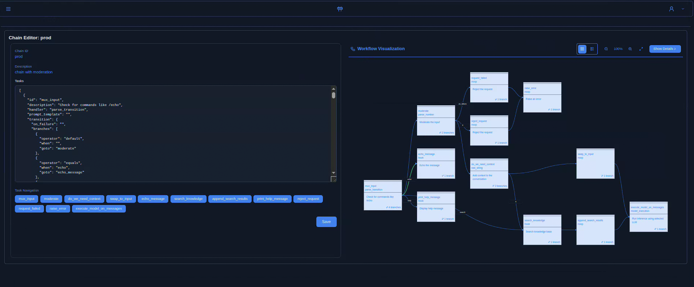

Runtime, nicht nur Library
Contenox ist eine vollständige Runtime-Umgebung – mit API-Gateway, Background-Workern, Storage und Observability – nicht nur eine Sammlung von Helper-Funktionen.
Runtime für souveräne GenAI-Anwendungen
Contenox ist eine selbst hostbare Runtime für deterministische, chat-native KI-Anwendungen. Orchestriere Sprachmodelle, Tools und Business-Logik, ohne Kontrolle über Daten, Routing oder Verhalten abzugeben.
Die Contenox Runtime API wird aktiv weiterentwickelt. Der Kernel ist Open-Source und kann als Referenz, für Produktionsdeployments per Docker oder als Experimentierbasis genutzt werden.
Die Contenox Runtime API wird aktiv weiterentwickelt. Diese Seite dient als Dokumentation und Kontext für Entwickler:innen, Analyst:innen und alle, die die Architektur und Ansätze des Projekts nachvollziehen möchten.
Kurzer Rundgang durch die Chat-Oberfläche, die Zustandsmaschinen-Workflows und die Observability-Tools. Die Demo spiegelt den Stand des Projekts vor seiner Einstellung wider.
Die Contenox-UI kombiniert einen Chat-Client mit einem visuellen Workflow-Inspector und Execution-Traces – so sehen Teams genau, welche Zustände, Tools und Hooks an einer Unterhaltung beteiligt waren.

Contenox ist eine selbst hostbare Runtime zum Aufbau und Betrieb von Enterprise-Agents, semantischer Suche und chat-getriebenen Anwendungen. KI-Verhalten wird als explizite, beobachtbare Zustandsmaschinen statt als intransparente Prompt-Ketten modelliert.
Contenox ist eine vollständige Runtime-Umgebung – mit API-Gateway, Background-Workern, Storage und Observability – nicht nur eine Sammlung von Helper-Funktionen.
Workflows waren explizite Graphen aus Tasks, Handlern und Transitionen. Jeder Schritt war sichtbar, steuerbar und reproduzierbar.
Nutzer:innen interagierten per Chat, aber jede Nachricht trieb unter der Haube einen deterministischen Workflow – von RAG-Queries über Tool-Aufrufe bis zu Seiteneffekten.
Betrieb on-prem, in der eigenen Cloud oder air-gapped. Requests können über OpenAI, Ollama, vLLM oder eigene Backends geroutet werden – ohne Lock-in.
Moderne KI-Systeme driften schnell in Intransparenz. Runtimes, die Logik, Datenflüsse und Seiteneffekte explizit machen, helfen Teams, über Verhalten nachzudenken statt zu raten. Contenox ist auf diesem Prinzip aufgebaut.
Die Runtime ist so ausgelegt, dass Teams Daten, Ausführungsgrenzen und Entscheidungslogik selbst kontrollieren können – ohne versteckte SaaS-Schichten.
Workflows wurden als deterministische Zustandsmaschinen modelliert: Tasks, Transitionen, Retries und Human-in-the-Loop waren explizit definiert.
Jeder State-Change, jeder Modellaufruf und jeder Hook war nachvollziehbar – eine Basis für Audits, Governance und Regulierung.
In seiner aktiven Phase ergänzte Contenox APIs wie OpenAIs Tools oder MCP. Es war vor allem dort sinnvoll, wo aus einzelnen KI-Aufrufen echte Workflows wurden.
Contenox führte KI-Workflows als explizite Zustandsmaschinen aus. Jeder Schritt – LLM-Call, Datenzugriff oder externe Aktion – war ein Task mit definierten Inputs, Outputs und Transitionen.
Über Hooks können externe APIs, Datenbanken oder Tools angebunden werden. Beliebige OpenAPI-kompatible Endpunkte werden zu aufrufbaren Tools für das Modell.
Workflows wurden in YAML oder per API definiert. Jede Ausführung war nachverfolgbar: Transitionen, Modellaufrufe, Hook-Ergebnisse und Zwischenzustände waren sichtbar.
Eingebaute RAG-Pipeline mit Dokument-Ingestion, Embeddings und Vektor-Suche (z. B. via Vald).
Routing über Ollama, vLLM, OpenAI oder andere Provider – mit konfigurierbaren Fallbacks und Policies pro Task.
Contenox ist modular und container-first aufgebaut. Die Runtime kann in bestehende Stacks eingebettet oder als eigene Infrastruktur-Schicht für KI betrieben werden.
Contenox ist keine Black-Box-SaaS, sondern Software, die selbst betrieben und angepasst werden kann – eine Runtime zwischen LLMs und produktiven Systemen.
Der Kern von Contenox ist weiterhin Open Source auf github.com/contenox/runtime .
Eine vorläufige OpenAPI-Spezifikation der Runtime-API steht als JSON und YAML zur Verfügung. Sie spiegelt den letzten Entwicklungsstand des Projekts wider.
Contenox ist ein aktiv gewartetes Open-Source-Projekt. Issues und Pull Requests auf GitHub werden regelmäßig geprüft. Die Runtime lässt sich per Docker selbst hosten.
Für gelegentliche Fragen oder Hintergrund zum Projekt können Sie weiterhin an hello@contenox.com schreiben – eine Antwort kann jedoch nicht garantiert werden.